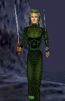

イヤですねぇ。 洗濯物は乾かないし、 じめじめしたのが続くし・・・・
あらあら、こんな話してるうちに、 見てください、こんなに雨が。
あ、ほら、また生えちゃいましたよ。
カビ。 
まあ、従来のRNG専用鎧が この一言でこんなに驚きの イヤな感じに！
ロケ地：Dagnor's Cauldron モデル：Kaede＠Kaze in RNG専用鎧 ＊ すまんせん（ｗ ちなみに北海道は梅雨ないっす。
ちなみに北海道は梅雨ないっす。